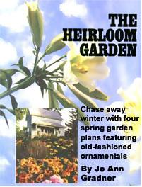
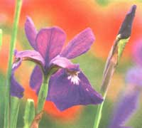
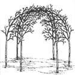
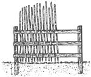

The Heirloom Garden
December/January 1991
IN 1970 WE MOVED A NOAH'S ARK OF animals--two horses, two cows, miscellaneous chickens, cats, and a dog--750 miles northeastward to a 100-acre farm at the end of a dirt road on a remote peninsula in Cape Breton Island. Nova Scotia. After we had rebuilt the barn, plowed and planted the fields, restored the fences. and established vegetable and fruit gardens, I turned my attention to the ornamentals I'd inherited with the property: herbs, flowers, and shrubs planted on a knoll just beyond the front door. There were lilacs, purple and white, their aging limbs spread over a wide area, almost touching one another. At the base of one, the ground was entirely covered with spotted-leaved lungwort (Pulmonaria officinalis)--clusters of small pink and lilac-blue trumpets in the early spring-and nearby was an impressive clump of tawny daylilies (Hemerocallis fulva), once described as the floral symbol of our gardening past.
Struggling to survive on the same piece of ground were a few mock orange bushes and a group of daffodils known locally as the French lily or white lily. most of whose buds never opened and later expired still in their papery covering. The few flowers I saw, though, were unforgettable: tight clusters of intensely fragrant, double-white blooms.
A rosebush sprawled in front of the house, just under a window, its suckers spreading in every direction. I knew virtually nothing about old roses then (this, I later learned, was a Banshee, also known as the Loyalist Rose, common at Colonial sites all over the Northeast). When the flowers opened, I discovered old-rose essence for the first time, deep within the layers of blush pink petals.
Yellow flag iris (Iris pseudacorus)--with swordlike green leaves and small fleur-de-lis blossoms in a classic design I'd never seen before--flourished in a large colony by the back door. In fact, I'd never seen the likes of any of these plants, having grown up in the suburbs and spent my gardening time hoeing rows of stringbeans to feed our family. This small collection of ornamentals opened up a new world to me. I was attracted to the plants' pronounced s cents, variety of forms (somewhat on the wild side), and charming, often quirky ways.
These plants, I thought, with their simple grace and charm, were close to the wild ... unspoiled by human intervention. But as I became more involved with the subject of old ornamentals, I realized that curious gardeners have been tinkering with nature for centuries and that the subject was much broader and more complex than I had imagined.
I've come to understand that what constitutes an heirloom ornamental is open to interpretation. Heirlooms change over time and are not fixed absolutely. They do, however, represent valued possessions at different periods in history. Those plants that deserve our attention as heirloom gardeners can be as varied as the truly antique 16th century double-flowered dame's-rocket (where is it now?), as well as hybrid creations that are deserving of attention. are becoming increasingly rare, and arc in danger ol' being lost to future generations of gardeners (the 1950s rose known as "Ma Perkins" comes to mind).
Just as my earlier experiences helped shape my idea of heirloom, my expanded knowledge contributed to a new vision, aptly summed up in author Edward Hyams's description of worthy lilies: "easy, tolerant, robust, and enduring."
This is the vision that stands behind the wide selection of plants I have chosen to describe.
I hope that those just becoming interested in the subject of heirloom ornamentals can experience their diversity as I have and make informed choices about what to grow and which aspects of heirloom plants to explore in depth.
I believe that qualities such as easy, tolerant, robust, and enduring are virtues in which many gardeners are interested and that these values are most in tune with the kinds of gardens they want to create: informal, low-maintenance, attractive landscapes in harmony with the surrounding environment. As I have learned, the plants that fit that description include the silverleaved lungwort, tending to itself under the filtered shade of my old lilac tree; the broad border of colorful hybrid dahlias that thrive at the edge of my neighbor's potato patch; and the 1942 Blue Shimmer iris, an indestructible bearded type that I acquired in the 1970s and have moved more times than I care to remember-now regarded as an "old favorite" and "antique" in the world of iris fanciers.
If one of the greatest pleasures of gardening is sharing, then how much greater is that pleasure when the sharing includes such a rich world of interesting and varied plants, our collective valued possessions.
A Few Definitions
The definition of heirloom ornamentals for our purposes is as follows: those plants introduced to American gardens from 1600 to 1950 (and a little beyond to accommodate the iris and other plants defined as "antique" if they have been introduced in the past 30 years). This is a diverse group of herbs, flowers, shrubs and vines, native flora, and plants from around the world. It is broken down into two categories: (1) Ancient and antique types (the terms are almost synonymous, with ancient suggesting older), known and described as early as classical times. The plants in this group include many very hardy, nearly wild types that we associate with English cottage gardens. (2) Middle-aged types. These are hybrid variations on ancient and antique themes that began to appear in great numbers as the result of expanded knowledge about plant breeding toward the end of the 19th century.
Strictly speaking, hybrids are the result of cross-fertilization between two plant species, sometimes occurring naturally but usually on purpose. The horticulturalist uses the term more loosely to apply to any crossfertilization between variant parents, such as the thousands of glads and irises created by crossing and recrossing cultivars. A cultivar, or variety, is any plant that arises from cultivation and is significant enough to name, as distinct from naturally occurring variations. You've probably heard the term open-pollinated (OP to the initiated). This means that the blossoms from those plants have been pollinated "in the open" by nature. Plants from any of the groups I have described are variously referred to as "antique" or "old-fashioned."
If you've grown only tamed types in your garden, you might want to become familiar with easily naturalized wild (OP) species, which, as I show, constitute a large and varied group of garden-worthy plants. If you've grown only the latest hybrid tea rose, a whole world of ancient, antique, and modern-classic roses awaits you. If you're interested in edible landscapes, heirloom plants supply plenty of material for making delicious and useful products-from salt substitutes to jellies to homemade detergent.
Plunging into heirloom gardening will be enjoyable as well as easy if you follow these suggested plantings, which have been organized into historical groupings: You can explore superhardy and OP plants typical of an early settler's garden, as well as the tender vinecovered arbors and hybrid roses, daffodils, and lilies of later periods.
It is most important for gardeners to have a rough familiarity with Latin names because common names, while charming, are unreliable for identification, and you may want to know the precise name of the plant you admire so that you can order it from a plant or seed source. Where I live, several different plants are known as London Pride, but none is the lovely little saxifrage (Sax ifraga urnbrosa) that most people associate with Gertrude Jekyll's cherished London Pride.
Common names are more than charming; they are part of our plant heritage, the stored wisdom and wit of countless generations of ordinary gardeners. They preserve interesting bits of history and often refer to a plant's outstanding physical characteristics in memorable images. Hurt Sickle, for instance, describes the way a mower's sickle was often caught in the wiry stems of Centaurea cyanus as it mingled with grain in the fields of Europe. Today we know this plant mainly by its Victorian name-bachelor's button-from its use as a boutonniere.
Growing zones can be difficult to ascertain since authorities do not always agree. Figures are based on the U.S. Department of Agriculture's (USDA) Hardiness Zone Map (see Mail-Order Sources, page 47). As experienced gardeners know, you can push these limits by planting in microclimates (protected sites where extra moisture, protection from the wind, exposure to sun, and so on, are provided), depending on the requirements of the situation.
Plant and seed sources are listed on page 47. Collectively, they represent state-of-the-art sources in the field, aside from very specialized listings, and range from mimeographed sheets to fat, glossy catalogs. They are a world unto themselves and are often worth ordering just to read.
Planning and Preserving the Heirloom Garden
"The love of flowers brings surely with it the love of all the green world."
-Francis King (The Well-Considered Garden, 1915)
The subject of heirloom plants is broad enough to include the nearly wild open-polinated (OP) herbs and flowers of old English cottage gardens and early American gardens, as well as the relatively new hybrid forms that poured forth in great numbers around the end of the 19th century, especially among roses, irises, and daffodils. If your tastes run to the former category and you think hybrids have no place in the heirloom garden, you can choose from a wide variety of plants introduced from the 17th to the 19th centuries in America, among them many wonderful natives.
I have organized the following groupings historically so that you may choose to plant those types that most satisfy the varied meanings of heirloom. For the eclectic gardener interested in beautiful and deserving plants from any era, I have included a wide-open garden with plants from all periods.
An Early Settler's Cottage Garden: 1600-1699
It is surprising how many ornamental plants turn up on lists of those grown in the 17th century, especially since we have been told so often about the Puritan gardens of utility. I rather think that these gardens, like most of those planted since the beginning of horticulture, were "compounded of both dreams and utility." How else can we explain the appearance of lilies-of-the-valley, sweet william, Canterbury bells, dame's-rocket, lilacs, and mock orange, whose herbal virtues are almost nonexistent'?
As might be expected, these gardens are characterized by sturdy, reliable plants that are adaptable and hardy, able to survive in a variety of habitats, and almost all from the Old World (with the exception of the native Canada lily [Lilium canadense], wild bergamot [Monarda fistulosa], and the flamboyant scarlet honeysuckle [Lonicera sempervirens]).
If you're just becoming interested in herbs, a settler's herb garden is a good way to start, since these plants are easy to grow and have many uses that speak to us today. All love the sun and can be grouped by the kitchen door within easy reach: chives for chopping into salads; southernwood sprigs for adding to potpourri or sachets, pebbly-leaved sage for flavoring; wild bergamot for tea; calendula petals for decorating cakes; at least one Old Garden rose for rose-petal jelly. Train a hop, honeysuckle, or an Everlasting pea-vine on an old-fashioned quiggly fence (perhaps the kind the settlers built), and you will also have support for the tall, single-flowered hollyhock and a variety of settler plants we value primarily for their good looks: bellflowers, feverfew, the bright red Jerusalem cross, the soft pink musk mallow (don't be afraid to pair them), the exquisite pearly florentine iris, and-- rising here and there--the flower-laden spikes of the white or madonna lily (Lilium candidum) and the pastel clusters of dame's-rocket, both to perfume the early evening air. Sow dark blue bachelor's buttons among these and add a double-flowered peony or two on the other side of the doorway. Before you know it, you will have the proverbial cottage garden.
You can carpet the ground beneath nearby lilacs and mock orange with spotted-leaved lungwort, to be followed by plants that appreciate the partial shade and moist ground they provide: lilies-of-the-valley, sweet cicely, columbine, daylilies, Canada lilies, and little Johnny-jump-ups. All of these plants will thrive with very little attention.
You can choose from the plants listed below to create your own settler's garden.
PERENNIALS (HARDY TO ZONE 3)
Chives (Allium schoenoprasum), Columbine, single and double (Aquilegia vulgaris), Cowslip (Primula veris), Florentine iris (Iris x germanica Florentina), Garden sage (Salvia officinalis), Grandma's poeny (Paeonia officinalis), Jerusalem cross (Lichnis chalcedonica), Lemon lily (Hemerocallis lilioasphodelus), Lili-of-the-valley (Canvallaria majalis, hardy bulb), Lungwort ( Pulmonari officinalis), Madonna lily (Lilium candidum), Monkshood (Acunetum napellus), Musk mallow (Malva moschanta), Peach-leaved bellflower, single and double (Campanula persicifolia), Southernwood (Artemisia abrotanum), Tawny daylily (Hemerocallis fulva), Wild bergamot (Monarda fistulosa).
BIENNIALS AND SHORT-LIVED PERENNIALS
Canterbury bells, single and double (campanula medium), Clary sage (Salvia sclarera), Dame's-rocket (Hesperis matronalis), Feverfew, single and double (Chrysanthemum parthenium), Hollyhock (Alcea rosea).
HARDY ANNUALS
Bachelor's button (Centaurea cyanus), calendula (Calendula officinalis), Johnny-jump-up (Viola tricolor).
SHRUBS (HARDY TO ZONE 3)
Lilac ( Syringa vlgaris), Mock orange (Philadelphus coronarius).
PERRENIAL VINES (Twinning, Hardy to Zone 3)
Everlasting Pea (Lathyrus latifolius, nearly evergreen in the South), Hop vine (Humulus lupulus), Scarlet honeysuckle (Lonicera sempervirens, evergreen in the South).
An Old-Fashioned Mix: 1800-1900
The term "old-fashioned" conjures up different images: a rustic, vine-covered arbor or a bleeding heart laden with dangling rosy hearts. Both fit the description of 19th-century plants: tender annuals from the Tropics (morning glories and nasturtiums) and sturdy perennials from the Orient. This period offers great scope, for the heirloom gardener can become acquainted with early hybrids--lush-flowered Bourbon and Hybrid Perpetual roses, whose generous, untailored forms evoke the past, blooming almost the entire summer or intermittently rather than all at once like the ancient Old Garden roses.
These are mixed plantings, a far step from the early settler's cottage garden of dreams and utility; they are also a bridge to the new world of hybrids, where art and science combine to produce new forms never before known, such as the large-flowered Jackman clematis, introduced in 1860 and still popular. Here you can also find the increasingly rare OP Essential petunia, a little sweet-scented pure white or dark purple velvet trumpet. This period offers a fine introduction to the whole concept of heirloom, saving the best from the period prior to the modem era.
A child's rustic arbor (see box) can be clothed in morning glories, moonflowers, and sweet pea and scarlet runner bean vines, all quick-growing plants. Around three sides-leaving room for an entrance path--plant a colorful annual border for all-season bloom from early summer into the fall: cosmos, double-flowered balsam, nicotiana, Shirley poppies or corn poppies, petunias, marigolds (single French and dwarf signets). This is certain to be a popular place for children in summer. Even if you have only a little room, several of these can be planted in containers. The heirloom-strain nasturtium Empress of India, for instance, is gorgeous in a hanging basket, with its cascading orange-red spurred flowers. The seldom-grown fern-scented signets, a mound of orange or yellow, blooms until frost (and even beyond if sheltered), fit into the landscape almost anywhere.
If you think hostas are boring, this is the opportunity to learn more about them. The types here were introduced from the Far East before the end of the 19th century. Try them in filtered shade (a good place for bleeding heart, too), and group them for contrast of foliage-broad and glossy, undulating, narrow, or variegated. Most hostas sport attractive, and sometimes quite fragrant, flowers. These pl ants, when given the tight accommodations--moist and cool-will spread out and look as if they mean to stay a long time (they will), and you won't be sorry you The spectacular wild goldband lily and, from the Orient, the showy Japanese lily-fragrant and free-flowering with large, waxy white, recurved pendant blooms-will do best among shrubbery, especially rhododendron, which also enjoy rich, humusy soil that is heavily mulched.
Plant hybrid roses on a sunny bank and edge them generously with furry gray, drought resistant mats of lamb's ears interplanted with the indispensable sweet alyssum, a border that will take care of itself all season.
For a hardy perennial vine to climb up a tree (use chicken wire), Jackman clematis puts on a good show all summer, but all of the vines below have proven their worth. To cover the side of an old shed, there is no better vine than the sweet autumn clematis.
The following are suggested plants for the old-fasioned mix.
PERRENIALS (Harfy to Zone 3 or 4 except where noted)
Bleeding heart (Dicentra spectabilis), Daffodils (Hardy bulbs): Angel's tears (Narcissus triandus albus; inquire about zone if nursery-propagated), Hop-petticoat daffodil (N. Bulbucodium Conspicuous, Zone 6, inquire about zone if nursery-propagated), Old plesant's -eye (N. Poeticus recurvus), Hostas: Blue plantain lily (hosta ventricosa) Fortune's plaintain lily (H. fortunei Hyacynthina), Fragrant plaintain lily (August or Corfu lily) (H. plantaginea) Siebold plantain lily (H. sieboldiana 'Elegans') Lilies: Goldband lily(Lilium auratum), Showy Japanese lily (L. speciosum 'Rubrum') Balsam (Impatiens balsamina) Cosmos (cosmos bipinatus), Marigolds (Tagetes patula and T. tenuifolia), Moonflower (Ipomea alba, quick-growing twining vine), Nasturiums (Tropaedom majus; flower and quick-growing twining vine), Nicotiana (Nicotiana alata), Petunia (Petunia hybrida) Scarlet runner bean and white runner bean (Phaseolus coccineus and P.coccineus Albus, respectively; quickgrowing; twining vine) Shirley or corn poppy (Popover rhoeas) Sweet pea (odoratus twining vine) Sweet alyssum (Lobularia maritima)
SHRUBS
Roses: Bourbon Louise Odier (Zone 6) Mme. Isaac Pereire (Zone 6) Hybrid Perpetual Baronne Prevost (Zone 5) Frau Karl Druschki (Zone 5) Rugosa Blanc Double de Coubert
(Zone 3 or 4) Roseraie de I'Hay (Zone 3 or 4)
VINES
(Hardy to Zone 3 or 4; twine like grapes; need horizontal support) Clematis Anemone clematis (Clematis montana rubens) Elsa Spath Jackman clematis (C: x jackmanii) Lord Neville Nell Moser Sweet autumn clematis (C. paniculata)
A Native Flora Garden: 1700-1850
The period from the 18th century through the early- to mid-19th century was characterized by a slow but growing awareness of our native plant treasures. Through the efforts of people like John Bartram--farmer, plant collector, and curious gardener extraordinaire--who established his own plant nursery in 1728, Americans for the first time had a commercial source for a variety of native plants, especially shrubs. Bartram, for instance, was responsible for introducing mountain laurel and the Catawba rhododendron (considered to be among our finest native shrubs). In the early 19th century, Bernard McMahon introduced some of the plants discovered during the 1803 Lewis and Clark Expedition--flowering currants (golden and clove), for instance. Thomas Jefferson grew many of these native shrubs at his home, Monticello. 0
If you're interested in native flora, an heirloom garden is an excellent starting point, as well as a good introduction to shrub growing in general. While some of these plants are quite specific in their growth requirements-preferring sun or shade, moist or dry soil-all are easy to grow once these conditions have been met. They are especially recommended for low-maintenance gardens that complement and blend in with their natural surroundings. Since many of these plants are fragrant, you will also have an attractive habitat for birds and butterflies.
For a garden in partial shade, with moist, humusy soil, choose among several native rhododendrons and azaleas (the former have nearly evergreen leaves, the latter deciduous ones that turn bronze or scarlet in the fall). Underplant them with native wildflowers such as Virginia bluebells, scarlet bee balm (really brilliant in partial shade), and bleeding heart (Dicentra eximia and D. formosa); and among them plant maidenhair ferns for all-season dainty green foliage.
Shrubs that will grow almost anywhere, resisting both drought and damp conditions, include the flowering golden and clove currants (Ribes aureum and R. odoratum, respectively), mountain laurel, and highbush cranberry (this will give you creamy white flower clusters in early summer and bright red berries and foliage in the fall). If planted in full sun, mountain laurel will reward you with masses of cup-shaped white flowers in late spring or early summer, but its handsome glossy leaves remain green all season and will provide a background for such sunloving plants as American columbine (Aquilegia canadensis), butterfly weed, blackeyed Susan, the yellow-whorled horsemint (Monarda punctata), and the bright orange-red leopard lily (Lilium pardalinum).
A sunny rock garden should include lowgrowing moss phlox-little blue flowers with drought-resistant, needlelike green foliage-spilling over and between the rocks; rhodora, a diminutive rhododendron with rose-colored flowers and attractive foliage; and crested iris, just three to four inches high--a mass of violet and gold in the spring. All of these could be followed by the colorful drummond phlox for a long season of bloom.
In that damp spot in the sun where nothing else will grow, you can plant the wild blue flag iris (combine it with the European yellow flag iris). The native elderberry is adaptable to damp as well as dry soil, and its thinly branched form won't block out the sun. At its feet you may encourage a colony of the magnificent Turk's cap lily (Lilium superbum), which is bright orange and heavily spotted. "A plant of so much beauty," Thomas Jefferson declared, "will be a valuable addition to our flower gardens."
If you're looking for an easy-to-grow vine for damp conditions, try American virgin's bower-a woody, twining vine that can be trained over an arbor, where it will produce masses of small white flowers in the spring, followed by unusual, fluffy fruits in the fall. You can establish a ground cover at its feet with two fine 18th-century introductions "from away": the azure blue lungwort (Pulmonaria angustifolia) and variegated goutweed. If you also let the old-fashioned bouncing Bet grow in a wide mat as it likes to do, its pink flowers will perfume the air in the early evening. Forget-me-nots should be added to any planting where the soil is moist, either in sun or shade. The Virginia creeper not only can be trained up the side of a building (it's a clinging vine), but when grown over an arbor, its side shoots will trail downward, creating a graceful effect anytime and a dramatic effect in the autumn, when its foliage turns scarlet red.
Choose fromamong these native plants those best suited to your area's growing conditions
PERENNIALS (Hardy to Zone 3 or 4 except where noted)
American columbine (Aguilegia canadensis) Bee balm (Monarda didyma) Blue flag iris (two species; one, Iris Virginica, is hardy to Zone 7) Butterfly weed (Asclepias tuberosa) Crested iris (Iris cristata) Horsemint (Monarda punctata, Zone b) Leopard lily (Lilium pardalinum) lupine (Lupinus polyphyllus) Maidenhair Fern (Adiantum pedatum) Moss phlox (Phlox subulata) Turk's cap lily (Lilium superbum; bulb hardy to Zone 5) Wild bleeding heart (Dicentra eximia and D. Formosa)
BIENNIAL OR SHORT-LIVED PERENNIAL
Black-eyed Susan (Rudbeckia hirta)
ANNUALS
Clarkia (Pulchella and G Unguiculata) Drummond phlox (Phlox drummondii) Godetia (Clarkia amoena) SHRUBS (Hardy to Zone 3 or 4 except where noted) Catawba rhododendron (Rhododendron catawbiense Album) Clove and golden currants (gibes odoratum and R. aureum, respectively) Elderberry (Sambucus canadensis) Flame azalea (Rhododendron calendulaceum, Zone 5) Highbush cranberry (Viburnum trilobum) Mountain laurel (Kalmia latifolia) Oregon holly grape (Mahonia aquiforum, Zone 5) Pink-shell azalea (Rhododendron vaseyi) Rosebay rhododendron (Rhododendron maximum) Swamp azalea (Rhododendron viscosum) Winter currant (gibes sanguineum, Zone 6)
PERENNIAL VINES
(Hardy to Zone 3 or 4) American virgin's bower (Clematis virginiana) Virginia creeper (Parthenocissus quinquefolia)
The Eclectic Garden: 1600-1950 Plus
This is the place to put it all together-cottage-garden herbs and flowers on the wild side with New Dawn, the 1930 hybrid climbing rose, which puts forth clusters of blush pink flowers all summer. The eclectic garden is also the place to explore the diverse world of heirloom glads, daffodils, irises, and lilies (so defined if they were introduced more than 30 years ago). These have endured in the marketplace or in the hearts of gardeners because of their superior qualities: adaptability, beauty, and an undefinable essence that elevates them to the status of legend. Did you ever think a glad could fall into this category? Many enthusiasts feel that way about Picardy, a 193 1 creation with soft pink blooms that has vanished from the marketplace but is perhaps still growing in a garden somewhere. Some heirloom gardeners feel as strongly about preserving Amigo, a 1938 bearded iris with extraordinary pansy coloring and generous form, as others feel about preserving 18th-century laced pinks. There is room in the eclectic garden for the simple, unadorned beauty of the wild cowslip (Primula veris) and Jan de Graaf's 1947 Enchantment Lily, an introduction that set the standard for hybrid lilies: reliable, freeflowering, and disease-resistant. Wherever they are planted, ancient, antique, and middle-aged heirlooms enjoy and thrive in each other's company.
In full sun, plant early settlers' flowers and herbs such as musk mallow, bellflower, sweet william, Jerusalem cross, Dame's-rocket, sweet cicely, sage, and indispensable Oriental poppy, fortified by the mountain bluet to help prop up its sprawling stems. Also add Mr. Russell's late1930s luscious hybrid lupines in every shade you can get, the tall spires of foxglove, and the sunny daisylike golden marguerite (through which the gray-green sage foliage will appear to advantage). Among these sow tall, white nicotiana and cosmos, dark blue bachelor's buttons, and annual poppies and calendula. To this generous all-season border, add bearded irises (all sizes and colors), vintage large-flowered glads--grouped together near the middle of the border, where just their blooms will be exposed-and an heirloom lily or two. The fragrant regal lily, with large white trumpets, is a good substitute for the white or madonna lily.
Did you know that there are wild glads for naturalizing, some so hardy that you need not dig up their corms in the fall (hardy glad)? These can be grown with wild sweet flag iris, which have fragrant lavender-blue flowers and striped foliage. In the rock garden, add Little Witch, a 1929 cyclamineus daffodil (only eight inches high) with yellow flared-back petals, and Louisa, a lovely variation on the narrow leaved plaintain lily, with its narrow, white-edged leaves and white flowers. In partial shade, plant the first pink-apricot trumpeted daffodil, Mrs. R.O. Backhouse, with Virginia bluebells. (Louisa will grow here, too.)
In that damp ground where nothing else will grow, establish the Siberian iris to naturalize with ancient and native yellow and blue flag irises.
Of course, you must have roses-for making hedges, arbors, adding to the shrubbery, and even planting in containers. Investigate the middle-aged classics, such as Buff Beauty, a 1939 hybrid musk shrub with a strong fragrance and an equable disposition, producing gold cream flowers all summer long, even in drought conditions. The ever-blooming polyantha (The Fairy), with masses of light pink double blossoms that last all summer, will make a low hedge or even a container plant. For a bushy hedge, grow Betty Prior, which has bright, singlepetaled pink blooms all summer and is spectacular when massed. As for Blaze, tie it to a post for full vertical bloom and train it along a fence (pegging down the long, supple canes) or over an arbor, where it will provide a fitting entrance to the eclectic garden.
PERENNIALS (Hardy to Zone 3 or 4 except where noted)
Daffodils: Beersheba Little Witch Mrs. R.O. Backhouse Silver Chimes (Zone 6) Thalia Foxglove (Digitalis purpurea) Glads (for naturalizing): Colville glad (Gladioli x colvillei Albus, Zone 7) Hardy glad (G. byzaritinus, Zone 4) Hybrid glads (treat as annuals) Dawn Glow Glacier Peter Pears Golden marguerite (Anthemis tinctoria) Hosta: Louisa Iris, bearded: Amigo Black Forest Blue Denim Honorabile Wabash Iris, Siberian (Iris sibirica) Eric the Red Helen Astor White Swirl Sweet iris (Iris pallida, Zone 5) Regal lily (lilium regale) lupines (Russell Hybrids) Mountain bluet (Centaurea montana) Oriental poppy (Popover orientale)
ROSES (SHRUBS, RAMBLERS, AND CLIMBERS USED AS VINES; HARDY TO ZONE 5 EXCEPT WHERE NOTED)
Betty Prior Blaze Buff Beauty Crimson Glory Paul's Scarlet Climber The Fairy (Zone 4) Therese Bugnet (Zone 4)
CHILD'S ARBOR
 TO MAKE THIS CHARMING CENTERPIECE, you will need half a dozen freshly cut saplings (alder, willow, or birch are good), 2" thick at the butt and 12' long, Leave the twigs on. Mark a circle with a 6' diameter on the ground. Sharpen the saplings' butts. Thrust two saplings into the ground opposite each other at six and 12 o'clock and arch them over each other, leaving enough room to walk underneath. Tie the saplings together securely with inconspicuous twine or wire at two or three places where they overlap on both sides. Do the same with two more saplings at two and eight o'clock, then with two more at four and 10 O'clock. Plant quick-growing annual vines all around the base of the arbor, except at the low entranceway.
TO MAKE THIS CHARMING CENTERPIECE, you will need half a dozen freshly cut saplings (alder, willow, or birch are good), 2" thick at the butt and 12' long, Leave the twigs on. Mark a circle with a 6' diameter on the ground. Sharpen the saplings' butts. Thrust two saplings into the ground opposite each other at six and 12 o'clock and arch them over each other, leaving enough room to walk underneath. Tie the saplings together securely with inconspicuous twine or wire at two or three places where they overlap on both sides. Do the same with two more saplings at two and eight o'clock, then with two more at four and 10 O'clock. Plant quick-growing annual vines all around the base of the arbor, except at the low entranceway.QUIGGLY FENCE

BUILD A THREE-RAIL FENCE BY DRIVING treated 6' posts 18" into the ground as far apart as the length of the fence. If the fence is longer than 12 feet, drive a post in the middle. Nail rails (use treated wood or peeled hardwood saplings) across the posts at 18", 36", and 36".
Weave young, unpeeled, fresh-cut saplings (black spruce or larch is best), no bigger around than 2", vertically through the rails (behind the bottom rail, in front of the middle one, and behind the top rail). Every other sapling should be woven in reverse (in front of the bottom, behind the middle, and in front of the top). Space the saplings an inch or two apart. You may cut them at a uniform height of 7' or 8' or vary them for a more natural effect, This type of fence also acts as an effective windbreak.
|
 Far Left: Tawny day-lilies (Hemerocallis fulva) in the Early Settler's garden. Left: Picking a bearded iris. |
 Far Left: Butterfly weed (Asclepias tuberosa) in the Native Garden Left: Black-eyed Susan (Rudbekia hirta). |
Siberian Iris (Iris sibirica) in the Electric Garden |
|
 |
 |
 |